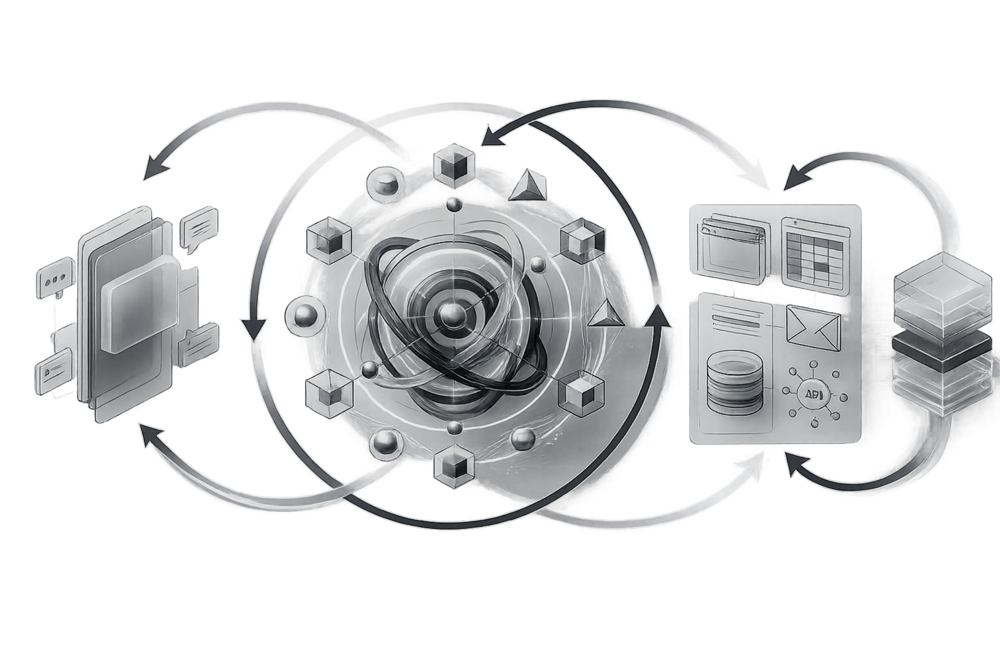

AI SIGNAL · AI INDUSTRY MAGAZINE
2026 · H1
智向
2026 AI 行业趋势与实践
SUMMARY
01
2025 年度 AI 十大趋势总结
SECTION 01 · 技术范式
02
智能的第二幕
03
从大模型到自主智能体
04
从预测模型到世界模型
05
从云端智能到具身智能
SECTION 02 · 产业变革
04
AI 产业格局
05
六大 AI 巨头战略比较
06
企业级 AI 实践
SECTION 03 · 产品演进
07
面向消费者的 AI 产品
08
图像 / 视频生成技术前沿
SECTION 04 · 趋势洞察
09
2026 AI 趋势预测及产业战略展望
点击条目跳转 · 页码后续可调整
趋势洞察
2025年度 AI 十大趋势：
迈向“伙伴时代”的科技进化
迈向“伙伴时代”的科技进化
年度人工智能发展回顾与趋势报告
来源：量子位智库《2025年度AI十大趋势报告》 & 全球前沿产业数据综述
2025年，AI进入深水重构期，从底座到生态全面重写。算力战略化、模型工程化、应用多维化，中国步入加速窗口。人工智能正在成为全球科技与产业竞争的决定性力量。
本报告提炼十大趋势，勾勒AI全年演进脉络，提供一个面向未来的理解框架。
INFRASTRUCTURE / MODELS / APPLICATIONS / CHINA TIME
PART 1 · INFRASTRUCTURE
PART 1 基础设施
2025 年，算力与芯片成为智能时代的“水电煤”。全球 AI 需求激增，
算力作为关键资源上升为国家级战略资产。
与此同时，芯片架构加速向 AI 原生方向演进，国产算力生态快速成型，
正在重塑智能产业的底层格局。
01
算力基建化
算力正由资源型资产转变为战略性基础设施。全球AI算力需求激增，各国竞逐建设“算力工厂”，2025年云厂商在专用算力上的投入高达2980亿美元。中国通过
“东数西算”
等项目加速全国算力统筹，并探索“太空超级计算机”等前沿路径，
算力基础的重构，正成为AI落地能力与国家科技主权的决定性变量。
国家算力网络
02
芯片 AI 化
AI 原生需求正在推动芯片从通用架构向专用化演进。GPU受限于供应瓶颈，NPU、ASIC（专用集成电路）、 FPGA等 专用芯片。加速崛起，终端侧智能硬件迎来爆发。
中国正以“模型+芯片+SDK”构建全栈国产算力体系，成功支撑千亿级模型训练。芯片AI化的深化，将决定AI能力的边界与主导权归属。
国产芯片生态
PART 2 · MODEL EVOLUTION
Part 2 模型进化
2025年的模型竞赛不再一味追求参数规模，而是转向架构优化与推理效率。
预训练决定梯队，推理决定落地，同时模型正在走向能理解并作用于物理世界的“具身系统”。
03
架构创新：预训练决定梯队，MoE 架构决定高度
大模型格局正由预训练能力划出分层，核心突破转向底层架构创新。在算力受限背景下， 混合专家（MoE）模型 成为主流，“大参数、小激活”实现规模与效率兼顾。中国多家头部团队已广泛采用。与此同时，
线性注意力、稀疏注意力
等新机制崛起，用以突破长序列计算瓶颈，模型结构正从Transformer出发迈向更高效的新范式。中国头部模型团队普遍采用上述路径；
例如
悟道 2.0
展示了在架构侧提升容量与效率的可行路径。
04
推理革命：大模型落地进入“推理时间”
2025 年，大模型落地全面进入“推理时间”。复杂任务需求推动模型从“直觉快思考”走向“逻辑慢思考”，
Test-Time Compute
成为新范式；与此同时，海量实时推理场景倒逼模型在结构压缩、算子优化与高效部署上持续革新。
为了让模型能跑在手机、PC、汽车等终端上，
模型蒸馏
与
端侧推理
成为刚需。以
本地化推理
的进展为大规模应用铺平道路。
05
具身智能崛起，信息AI与物理AI汇流
AI正从理解世界迈向操控世界。信息领域的大模型应用已成规模，而物理场景的智能化刚起步。具身智能成为关键合流口，
VLA（视觉-语言-动作）模型
和
世界模型
构建起AI连接原子与比特的能力边界。机器人不再是“头脑简单、四肢发达”的代名词，正被大模型赋能为
可感知、可规划、可执行的智能体。 。
PART 3 · APPLICATION LANDSCAPE
Part 3 应用版图
当底层能力趋于成熟，AI 应用在 2025 年大幅扩张：从信息世界走向物理世界，
从“工具”进化为“伙伴”。Agent 重塑人机交互与流量入口，多模态与 AI4S
把生产力与科研范式一起推到新阶段。
06
AI重塑流量入口：PC互联网、移动互联网、Agentic互联网
互联网入口从搜索与 App 向 Agent 迁移。用户只需表达意图，Agent 即可规划与执行，
形成“服务找人”的新分发逻辑，成为用户与数字世界交互的
“唯一入口”
。
07
多模态AI应用落地关键：视频、3D、代码依次展现生产力
多模态不再是“演示能力”，而是成为了实质性的生产力工具。未来，视频、3D内容和软件开发的边际成本将趋近于零，
“创意产业和软件工程”
将迎来效率爆炸。
08
AI硬件百端齐放：终端设备的集体“焕脑”时刻
AI 从 PC 与手机溢出，进入眼镜、车载、玩具与各类带电设备。
端侧算力提升与模型小型化叠加隐私与低延迟诉求，推动“本地智能”成为标配。
“代表设备”
提示新一轮换机潮正在形成。
09
AI4S 突破：AI 晋升为博士级“科研合作伙伴”
AI for Science 在生物、材料与数学证明等领域出现质变：从数据处理走向科学推理，
显著压缩研发周期，并被视作通向 AGI 的关键路径之一。
“为什么重要”
也成为大国科研竞争的新战线。

PART 4 · CHINA TIME
Part 4 中国时间
2025年，中国AI全面提速，从应用落地迈向底层创新主导。自主芯片、开源模型、国家算力网络等基础工程加速成型，AI硬件、科研与开源生态多线突破。中国正以独有路径重塑AI格局，从“跟跑”走向“领跑”，为通往AGI提供一条具有全球影响力的“中国路线”。
10
开源AI进入中国时间：AGI 拥有中国路线
中国正从AI创新的“跟跑者”转向“路线制定者”。2025年，开源大模型成为中国打通技术自主、生态建设与国际影响力的核心抓手。
“通义千问”
、DeepSeek等国产模型跻身全球主流，Qwen单月下载量已超越LLaMA等国际巨头，中国正式进入开源AI“第一阵营”。借助庞大市场、算力网络与全栈自研体系，中国正走出一条通向AGI的独立路径，并重塑全球开源力量格局。
AI SIGNAL · AI INDUSTRY MAGAZINE
SECTION 01
SECTION 01 · TECH PARADIGM
技术范式
技术变革正在发生“底层重写”：从模型架构到推理方式，从工具调用到端侧部署，
产业进入新一轮技术跃迁窗口。
架构创新
推理革命
Agent / CUA
端侧与硬件
多模态与具身
ARCHITECTURE / INFERENCE / TOOLING / DEPLOYMENT
TECH PARADIGM · ACT II
智能的第二幕
从「能力集合」走向「完整生命体」
INTRODUCTION
站在 2025 年的门槛上回望，人工智能似乎刚刚结束了一场漫长的“热身赛”。过去两年，人们沉浸于模型能力的飞跃：考试、写作、生成内容，AI 更像强大的工具。
但进入 2025 年，关注点开始转移——技术讨论不再只围绕参数规模，而是转向思考的深度与行动的后果。
如果第一幕是内容生成，那么第二幕，正在走向行动与生存。
FIRST LEAP
第一重跃迁
从“语言模型”到“自主智能体”的觉醒
很长一段时间里，大模型本质上是一个概率预测机——它计算下一个字最可能是什么。它像一个反应极快的即兴演讲者，虽然才华横溢，但缺乏深思熟虑。这是心理学所说的“系统 1”（快思考）。
而在 2025 年，AI 开始学会了“停下来思考”。
随着 OpenAI o1/o3 等推理模型的出现，AI 引入了类似于人类“系统 2”的思维模式 。在输出答案之前，它开始在内部进行漫长的逻辑推演、自我反思和多路径探索。它不再只理解你问了什么，而是开始判断你真正想完成的事情。
它不再通过海量数据“死记硬背”答案，而是通过推理时计算（Inference-time Compute）现场推导出答案 。当这种推理能力与工具接口、执行权限结合，AI 便从“对话者”转变为“代理人”（Agent）。
在这一阶段，AI 的价值衡量标准发生了根本变化：
我们不再关心它“说得有多漂亮”，而只关心它“事情是否真的被完成”。
而在 2025 年，AI 开始学会了“停下来思考”。
随着 OpenAI o1/o3 等推理模型的出现，AI 引入了类似于人类“系统 2”的思维模式 。在输出答案之前，它开始在内部进行漫长的逻辑推演、自我反思和多路径探索。它不再只理解你问了什么，而是开始判断你真正想完成的事情。
它不再通过海量数据“死记硬背”答案，而是通过推理时计算（Inference-time Compute）现场推导出答案 。当这种推理能力与工具接口、执行权限结合，AI 便从“对话者”转变为“代理人”（Agent）。
在这一阶段，AI 的价值衡量标准发生了根本变化：
我们不再关心它“说得有多漂亮”，而只关心它“事情是否真的被完成”。
SECOND LEAP
第二重跃迁
从“统计概率”到“世界模型”
然而，仅仅能够行动还不够。为了在残酷的现实中生存，AI 必须真正“理解”它所处的环境。这就是 2025 年技术领域最宏大的愿景——世界模型（World Model）的崛起。
AI 开始在内部构建一个“数字孪生世界”。在采取行动前，它可以在这个模拟器中进行成千上万次的沙盘推演，尝试回答一个人类特有的问题：“如果我这样做，世界会发生什么？”
这标志着 AI 从预测“下一个词”（Next Token Prediction），进化为预测“下一帧未来”（Next Frame Prediction）。
它不再是死记硬背“杯子掉落会碎”，而是理解了因果律。这种预判能力，让 AI 从一个只会做填空题的学生，变成了能够为决策负责的棋手。
AI 开始在内部构建一个“数字孪生世界”。在采取行动前，它可以在这个模拟器中进行成千上万次的沙盘推演，尝试回答一个人类特有的问题：“如果我这样做，世界会发生什么？”
这标志着 AI 从预测“下一个词”（Next Token Prediction），进化为预测“下一帧未来”（Next Frame Prediction）。
它不再是死记硬背“杯子掉落会碎”，而是理解了因果律。这种预判能力，让 AI 从一个只会做填空题的学生，变成了能够为决策负责的棋手。
THIRD LEAP
第三重跃迁
从“数字幽灵”到“具身智能”
当 AI 拥有了能够做事的“手”（Agent），又拥有了能够预判后果的“脑”（世界模型），它被禁锢在服务器里的日子就屈指可数了。
智能正在从数字世界溢出，进入物理世界。这就是具身智能的觉醒。
这是李飞飞博士所定义的“空间智能”（Spatial Intelligence）的时刻——AI 从处理二维的像素，进化到理解三维的实体。它不再只是通过文本认识“杯子”，而是理解杯子是三维的、有重量的、受重力约束的、可以被抓取的。
在这一阶段，AI 终于拥有了“身体”。无论是人形机器人的钢铁躯干，还是自动驾驶汽车的传感器底盘，AI 开始走出数据中心。它开始感知摩擦，适应光线，预判碰撞。它不再是在数据库中检索答案，而是在凌乱、不可预测的真实物理世界中“存在”并与我们“共生”。
智能正在从数字世界溢出，进入物理世界。这就是具身智能的觉醒。
这是李飞飞博士所定义的“空间智能”（Spatial Intelligence）的时刻——AI 从处理二维的像素，进化到理解三维的实体。它不再只是通过文本认识“杯子”，而是理解杯子是三维的、有重量的、受重力约束的、可以被抓取的。
在这一阶段，AI 终于拥有了“身体”。无论是人形机器人的钢铁躯干，还是自动驾驶汽车的传感器底盘，AI 开始走出数据中心。它开始感知摩擦，适应光线，预判碰撞。它不再是在数据库中检索答案，而是在凌乱、不可预测的真实物理世界中“存在”并与我们“共生”。
学会做事（Agent）、理解后果（World Model）、实体存在（Embodied AI）——这三条技术路径，实则在 2025 年交汇于一点。
它们共同指向了一个清晰的未来：AI 正在从一种辅助人类的“工具”（Tool），进化为一种能够独立感知、思考并改变世界的“物种”（Entity）。
在这个新阶段，真正决定 AI 上限的，不再是它背过多少书（数据量），而是它能在多大程度上理解物理法则，在多大程度上具备自主性，以及在多大程度上值得被托付。
欢迎来到智能的第二幕。在这里，我们不再通过“对话框”与 AI 交流，我们将与它们在同一个世界里“共事”。
它们共同指向了一个清晰的未来：AI 正在从一种辅助人类的“工具”（Tool），进化为一种能够独立感知、思考并改变世界的“物种”（Entity）。
在这个新阶段，真正决定 AI 上限的，不再是它背过多少书（数据量），而是它能在多大程度上理解物理法则，在多大程度上具备自主性，以及在多大程度上值得被托付。
欢迎来到智能的第二幕。在这里，我们不再通过“对话框”与 AI 交流，我们将与它们在同一个世界里“共事”。
03 AGENT ERA
Agent时代：2025 ——
从生成式副驾驶到自主智能体
从生成式副驾驶到自主智能体
ABSTRACT
2025 年，AI 正从生成内容的工具，迈入能够自主规划与执行任务的“代理时代”。智能体不再只给答案，而是直接交付结果。随着推理能力与行动闭环成熟，AI 正重塑软件形态与工作方式，开启智能经济的新阶段。

CHAPTER 01 · PARADIGM SHIFT
第一章 范式大转移：从第一幕到第二幕
过去三年，AI的发展更像一场技术驱动的“能力展示”。以 ChatGPT 为代表的大模型证明了它们在语言、创作与知识压缩上的惊人表现，但在真实应用中，多数产品仍停留在 “副驾驶”阶段：AI提供建议，人类负责决策、执行与兜底。
进入 2025 年，这一逻辑开始失效。企业不再关心模型“会不会说”，而是关心“能不能把事情做完”。技术关注点由生成内容转向任务完成率，由提示工程转向端到端执行。
AI 的角色也随之发生变化——从被动响应的工具，走向能够自主规划、持续行动的智能代理。这标志着 AI 正式进入第二幕：代理时代。
进入 2025 年，这一逻辑开始失效。企业不再关心模型“会不会说”，而是关心“能不能把事情做完”。技术关注点由生成内容转向任务完成率，由提示工程转向端到端执行。
AI 的角色也随之发生变化——从被动响应的工具，走向能够自主规划、持续行动的智能代理。这标志着 AI 正式进入第二幕：代理时代。
NOTES (CLICK TO EXPAND)
📎
为什么 Copilot 不是 Agent？
📊
评价 AI 的标准正在改变?
💡
提示工程为何正在失效？
Sources: Sequoia Capital (Act 1 → Act 2) · Gartner 2025 Strategic Technology Trends
03 AGENT ERA

CHAPTER 02 · COGARCH EVOL
第二章 认知架构的进化：
System 2 推理的崛起
System 2 推理的崛起
Agent 在 2025 年迎来突破，并非因为模型“知道得更多”，而是因为开始学会如何思考。
早期大语言模型虽知识丰富，但推理依赖概率直觉，面对复杂问题容易走偏，甚至产生幻觉。
关键转折来自对人类认知机制的借鉴——System 2 推理。与快速、自动反应的 System 1 不同，System 2 强调放慢节奏，在给出答案前进行问题拆解、路径规划与自我校验。这使 AI 不再“脱口而出”，而是像人类在草稿纸上反复演算后再作答。
以 OpenAI 的 o1 模型为代表，新一代推理模型通过强化学习训练“思维链”，将大量计算从训练阶段转移到推理阶段。结果是：模型不仅更擅长数学、代码和复杂规划任务，也在安全性上显著提升——它会在内部推理中主动审视风险，避免越界输出。
早期大语言模型虽知识丰富，但推理依赖概率直觉，面对复杂问题容易走偏，甚至产生幻觉。
关键转折来自对人类认知机制的借鉴——System 2 推理。与快速、自动反应的 System 1 不同，System 2 强调放慢节奏，在给出答案前进行问题拆解、路径规划与自我校验。这使 AI 不再“脱口而出”，而是像人类在草稿纸上反复演算后再作答。
以 OpenAI 的 o1 模型为代表，新一代推理模型通过强化学习训练“思维链”，将大量计算从训练阶段转移到推理阶段。结果是：模型不仅更擅长数学、代码和复杂规划任务，也在安全性上显著提升——它会在内部推理中主动审视风险，避免越界输出。
从这一刻起，AI 的上限不再只由参数规模决定，而取决于它愿意“想多久”。
FIGURE ·
SYSTEM 1 → SYSTEM 2

Sources: System 1/2 (Kahneman) · OpenAI o1 reasoning paradigm
03 AGENT ERA
CHAPTER 03 · AGENT ANATOMY
第三章 智能体的解剖：
感知、推理与行动的闭环
感知、推理与行动的闭环
有了 System 2 的推理能力，智能体还必须“看见环境、动手执行”。核心在三项技术：智能体循环（Agentic Loop）、计算机使用（Computer Use）与多模态交互。Agentic Loop 以“观察→推理→行动→反馈”迭代推进，能随环境变化改计划、找替代路径。Computer Use 让模型以屏幕截图为视觉输入，推断坐标并输出鼠标键盘指令，从“给建议”升级为“亲自操作”。多模态交互进一步打通跨软件协作，使代理像数字员工一样完成端到端流程，但也要求更严格的权限隔离与审计边界。
NOTES (CLICK TO EXPAND)
🧠 智能体循环
🖱️ 计算机使用
🧩 多模态协作
FIGURE ·
AGENTIC LOOP · MULTI-AGENT · MEMORY

Sources: Gartner (Agentic AI) · Anthropic (Computer Use) · OSWorld benchmark (reference)
03 / AGENT ERA
CHAPTER 01 · PARADIGM SHIFT
第四章 商业模式重构：
从 SaaS 到 SwaS 的时代
从 SaaS 到 SwaS 的时代
每一次 AI 跃迁都会改写软件的价值定义。当智能体具备自主行动能力，行业正在从 SaaS（软件即服务）走向 SwaS（服务即软件）。SaaS 更像“工具租赁”：买系统后仍要培训员工去用，价值依赖人来完成；并且收入与席位数绑定，增长迟早触顶。SwaS 则把 AI 变成数字劳动力：用户只下达目标，代理负责执行并交付结果。定价从订阅转向按任务/Outcome 计费；复制成本接近零，服务边际成本显著下降；护城河也从工作流粘性迁移到“行业隐性知识 + 专有数据 + 认知模型”。同时，底层通用模型趋向寡头，应用层将出现大量垂直代理公司：在真实业务中迭代、沉淀数据，形成认知飞轮与壁垒。
🧩 SaaS 的天花板
⚙️ SwaS 三个变化
🧠 通用 vs 垂直
FIGURE ·
TOOL PRICING → OUTCOME PRICING
SaaS vs SwaS

Sources: SaaS economics · Agentic AI business shift · Vertical agents & data moats
04 / Business Model Reset
CHAPTER 05 · ENTERPRISE STRATEGY
第五章 企业战略展望：
迈向代理时代
迈向代理时代
Gartner 为企业描绘了迈向代理时代的路线图：自动化将从“固定流程”升级为“可自适应的代理”。与传统 RPA 不同，代理能在遇到障碍时改路径、继续推进，成为企业劳动力的延伸。
但代理权限越高，风险越大——企业必须跨越“AI 代理鸿沟”：设定边界与目标约束、建立身份认证机制，并保留可解释与审计链路。下一阶段的软件不再是单一模型，而是“AI 团队作战”：主控代理拆解任务、调度多个子代理并行执行与相互校验，把效率与可靠性一起推上新台阶。
但代理权限越高，风险越大——企业必须跨越“AI 代理鸿沟”：设定边界与目标约束、建立身份认证机制，并保留可解释与审计链路。下一阶段的软件不再是单一模型，而是“AI 团队作战”：主控代理拆解任务、调度多个子代理并行执行与相互校验，把效率与可靠性一起推上新台阶。
🧩 从流程到代理
🛡️ AI 代理鸿沟
🧠 多智能体协作
FIGURE ·
AUTOMATION → GOVERNANCE → MULTI-AGENT
Gartner-style enterprise roadmap
Sources: Gartner (Agentic AI, AI governance) · Anthropic (multi-agent research reference)
05 / Enterprise Strategic
CHAPTER 06 · TOWARD AGI
第六章 通往 AGI：
从定义走向现实
从定义走向现实
当 AI 具备“搞定事情（Figure Things Out）”的能力，
它就是 AGI
与其纠结 AGI 是否“拥有人类般意识”，不如采用功能性定义：当 AI 能在开放环境中自主感知、推理与行动，并以新的方式解决问题，它就已跨入下一阶段。红杉资本也暗示，这并非某个瞬间的奇点事件，而是技术演进的延续。
2025 年，我们已看到雏形：更长链路的推理开始解决前所未见的难题，模型也开始像人类一样使用计算机完成跨软件任务——“把事做完”的能力正在走向现实。
2025 年，我们已看到雏形：更长链路的推理开始解决前所未见的难题，模型也开始像人类一样使用计算机完成跨软件任务——“把事做完”的能力正在走向现实。
2025，代理时代已开启。
从“使用工具的操作员”转向“驱动 AI 团队的指挥官”，专注定义目标、监督产出并持续优化人机协作。人不会被 AI 取代，而会被更会用 AI 的人超越。
当 AI 代理替我们搞定事情，人类将把想象力发挥到极致。
当 AI 代理替我们搞定事情，人类将把想象力发挥到极致。
Sources: Sequoia Capital · Anthropic · OpenAI
END
04 WORLD MODEL
从预测模型
到世界模型
到世界模型
AI 从统计概率跃迁为
“认知沙盘”
从 Next Token Prediction 到 Next Frame Prediction：
AI 正在学习用一个“可推演的世界”来思考。
AI 正在学习用一个“可推演的世界”来思考。
04 WORLD MODEL
“世界模型” 是什么, 不同于以往什么？
世界模型（World Model）
是 AI 在内部建立的一套 可运行的世界模拟：
它以抽象但 高保真 的方式表示
环境状态，
并能 推演未来如何演化，
评估行动后果。
它关注的不只是语言表面的相关性，而是对现实世界
规律与因果关系
的理解与预测。
相比之下，传统大语言模型更擅长 预测下一个词， 主要从文本中学习模式；世界模型则更倾向于从 多模态信息 中学习世界如何变化，为 决策与规划 提供依据。
相比之下，传统大语言模型更擅长 预测下一个词， 主要从文本中学习模式；世界模型则更倾向于从 多模态信息 中学习世界如何变化，为 决策与规划 提供依据。
语言模型更像：“猜下一个词”
世界模型更像：“搭场景 → 演化剧情 → 给出可能走向” (展开)
世界模型更像：“搭场景 → 演化剧情 → 给出可能走向” (展开)
要实现世界模型，关键在三类能力：
多模态感知
物理直觉
三大引擎
三者合力，
世界模型把 AI 从
“纸上谈兵”
带入
“身临其境”
的
决策与行动。
GENIE 3 · WORLD MODEL DEMO
OPEN ↗
预览：Genie 3 实时生成可交互世界（点击跳转 YouTube 原视频）
04 WORLD MODEL
APPLICATIONS
应用前景：世界模型正在改写什么？
通过四个真实场景，直观看见一种新能力的出现：
AI 不再只是理解世界，而是能够预测、推演，并在虚拟世界中先行试错。
这正是“世界模型”走向现实的方式。 (展开)
AI 不再只是理解世界，而是能够预测、推演，并在虚拟世界中先行试错。
这正是“世界模型”走向现实的方式。 (展开)
AUTONOMY
自动驾驶
在行驶前，先在“脑中”演练过所有可能的路况变化。
ROBOTICS
机器人与具身智能
先在虚拟世界里学会行动，再走进现实。
GENERATIVE WORLDS
游戏与虚拟世界
世界不再被“设计完成”，而是被实时生成。
DIGITAL TWIN
数字孪生与决策模拟
在真实行动前，先模拟未来的后果。
从模拟到影响：
世界模型正在把“预测”变成 规划与行动。
WHY IT MATTERS
WHAT'S NEXT

03 WORLD MODEL
CLOSING
世界模型：通往 AGI 的跳板，
迈向“理解”的外包
迈向“理解”的外包
世界模型的崛起不只是模型能力的升级，更是人类第一次尝试将
“理解世界”
这一最本质的认知活动，部分外包并赋权给机器。
当 AI 拥有可运行的内在沙盘，它将不再只凭相关性作答，
而是带着模型去追问
“为什么”
，并推演
“接下来会怎样”。
这意味着，理解正在从一种人类专属能力，转变为一种可被构建、训练与复用的系统能力。
这意味着，理解正在从一种人类专属能力，转变为一种可被构建、训练与复用的系统能力。
AGI LADDER
走向物理世界，可能是通往
更高智能
的必经之路。
(展开)
COGNITIVE PARTNER
未来我们与 AI 的互动，可能更像与
“认知合伙人”
一起推演与决策，而不只是获得一句回答。
世界模型并不替你回答问题本身，它改变的是：我们如何抵达答案。
这既令人兴奋，也引人深思：当理解被外包，
人类该如何掌舵方向？
参考来源与致谢